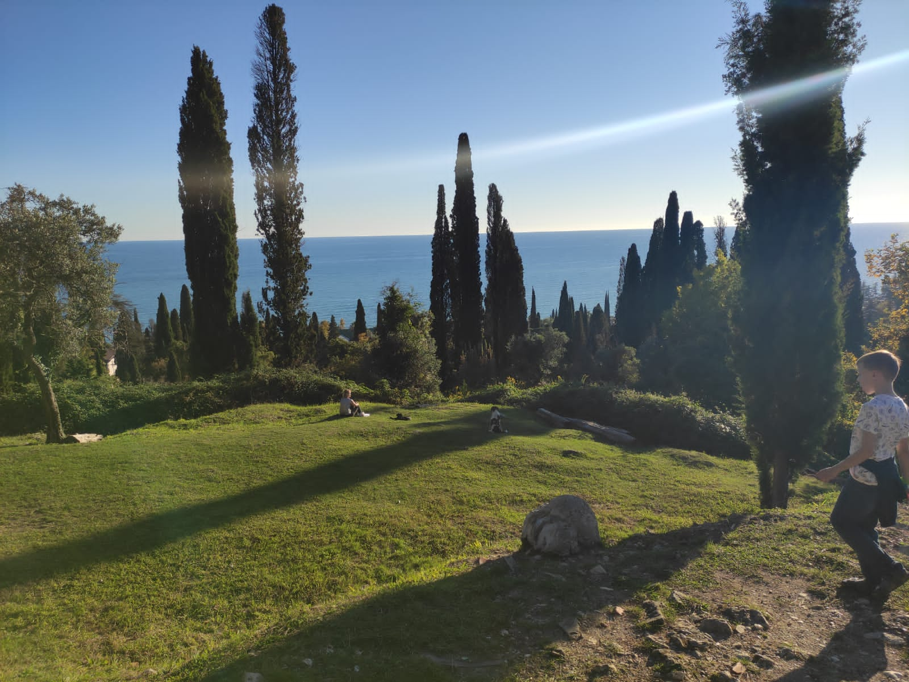
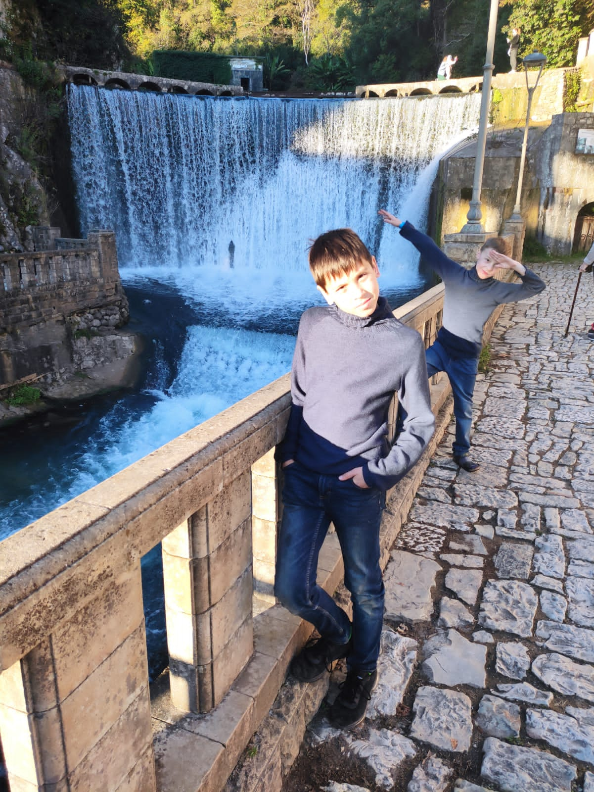
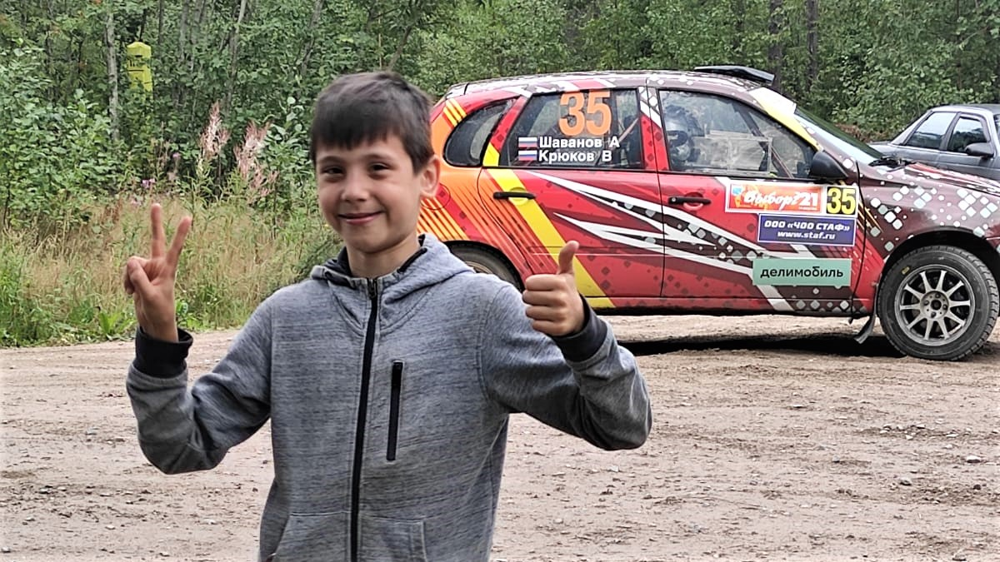
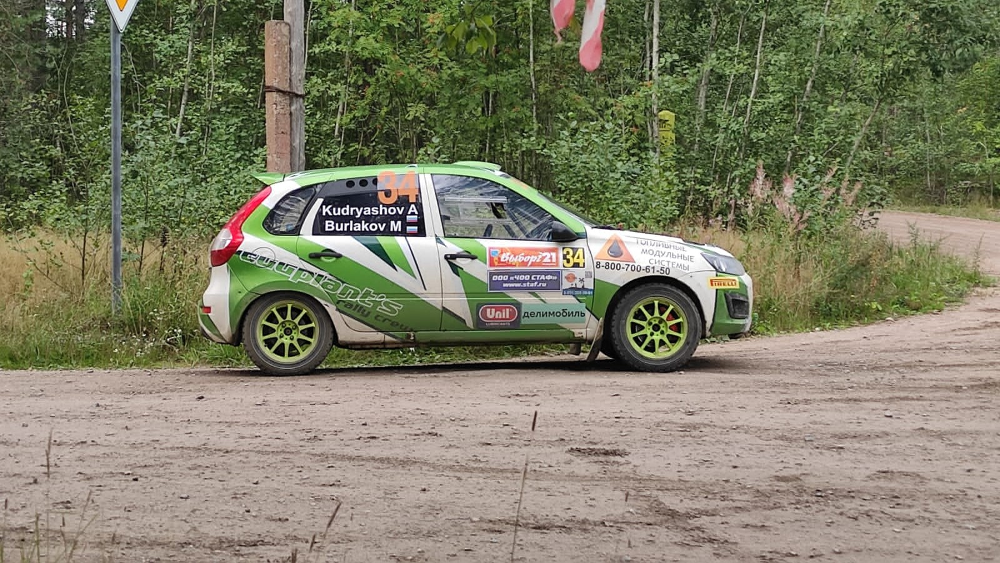
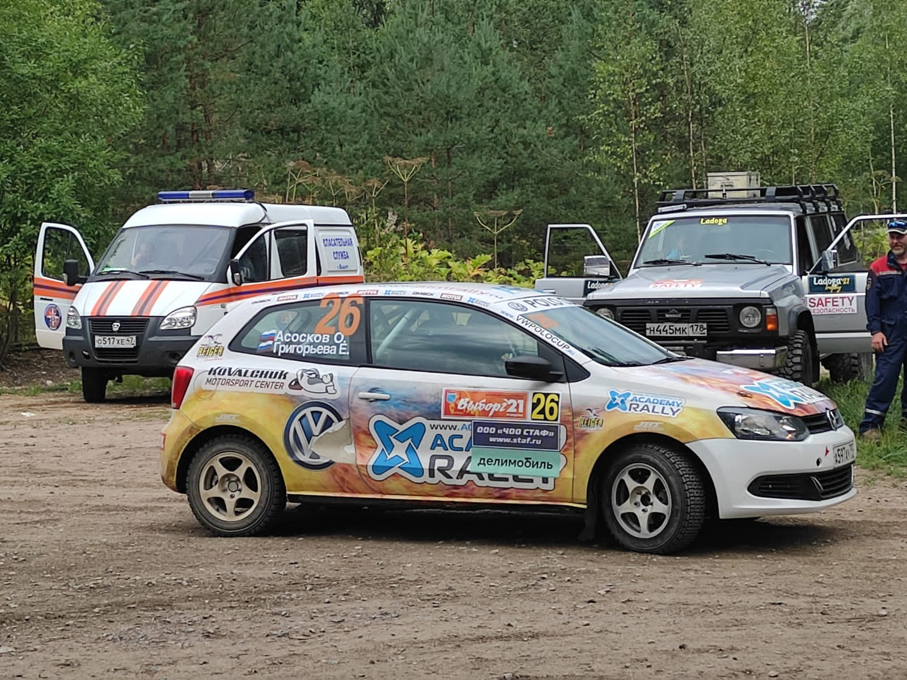

Сочи
-
В этом году мы несколько дней провели в Сочи, там много интересных мест и огромный пляж. Нам с братом нравится искать камни-талисманы и загадывать желания. Оказывается в Сочи тоже есть забеги Parkrun . Я участвовал! Бежать по набережной - это очень круто! Всё вместе мы ездили на экскурсию в Абхазию и ходили в музей Тесла. Я узнал много интересного и удивительного!


Я принял участие в субботнем забеге parkrun.
Мы с братом в парке Ривьера
Абхазия
Больше всего мне понравилась поездка в Абхазию. Я увидел большое количество замечательных мест: озеро Рица, Гагры, ресторан Гагрипш, каньоны, водопады и голубое озеро.
Нам предложили разнообразные виды сыра, мяса и мёда. Путешествие было невероятно захватывающим, интересным и запоминающимся… Мне очень понравилась экскурсия.
 
Ферма
Каждое лето мы ездим отдыхать на ферму под Каменногорском. Мне там очень нравится!
Там я играл с друзьями в разные игры: прятки, догонялки, участвовал в проведении традиционных
русских праздников и мероприятий. Еше я играл в кладоискателя и находил разные желёзки и даже
холостые гильзы! В этих местах в ВОВ велись военные действия.


Рядом с нашим домиком есть озеро с красивым пляжем, когда была тёплая погода, я купался
или зарывался там в песок. На ферме много разных животных: коровы, гуси, кролики, козы,
лошадка Злата. Иногда мы помогали за ними ухаживать.
Ещё мы помогали маме собирать грибы и ягоды, их много в тех местах. И потом ели
грибной суп и фермерский творог с черникой и малиной. В пасмурную погоду мы делали поделки
из природных материалов: листьев, шишек и цветов. Ещё там много отличной глины! Из неё мы
тоже лепили разные изделия, например, тарелочки для кота.
Этим летом совсем рядом с фермой проходили гоночные совернования!
  Прямо в 500 метрах от нашего дома был старт ралли. Оно называлось "Выборг'2021". Мы увидели ооочень много гоночных машин из разных городов и стран. Было очень круто!